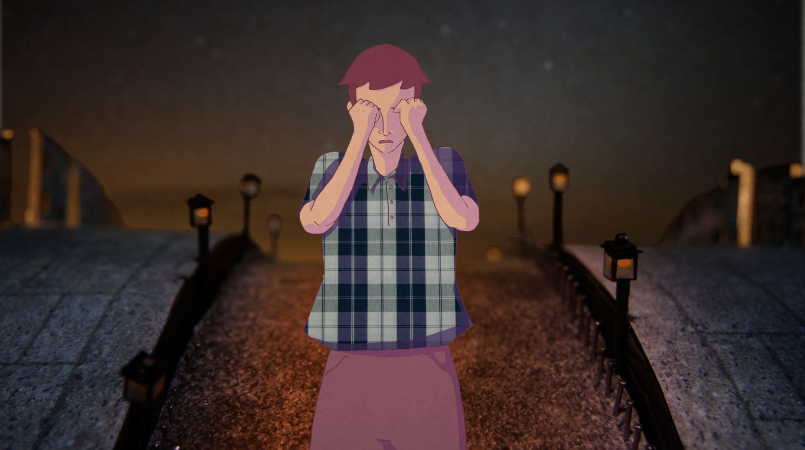

JEAN, FLORE, ETC
ANIMATION & EDITING
Summer 2012 : bachelor graduation was ahead and I was wondering what should I make for this special year.
When I first began animation, I was discovering contemporary dance and circus at the same time. For me, animation was all about movements. But studying animation, I came to realize that it is a very complex media, including in its process so much different disciplines. Like drawing, which was my first passion, but also cinema. For so many people, animation is a cinema genre. As I totally disagree with that view, still cinematographic techniques are an important part of the animation process.
And the one thing that I love the most about cinema, is editing. So I started working on that, editing, assembling, confronting lots of videos, that I shot or found.



MUSIC & STORY-TELLING
One of my friend had a song he wanted illustrated, and I liked this song a lot, we were talking about making a clip for it for a while. Putting images on top of music was the best editing exercise I could think of, so this is how it started. It was really challenging and enjoyable to mix animation with live action, especially as the song is about how we always tell the same stories about love and life, and question fiction and reality. So animation is used as the place of fiction, and illustrates what is happening between the characters. The videos come in between as symbolic images of their feelings and emotions, but those emotions are what is real about this fictional story. It is the purpose of every story ever to tell and think about universal feelings.
SET & STOP-MOTION
For the background I had the idea of wheel spinning city, but I didn't want it to be digital. I wanted to feel some texture, some fragility also, something "handmade". And most of all, some little lights that could illuminate the night scenes. I had the help of my friend Florent for the electric installation, and of David Chambolle, scenograph and animator, for the set design and building.
Plans for the set
 Building the set
Building the set

 Those street lamps were crazily tiny. It took us a whole day and night.
Those street lamps were crazily tiny. It took us a whole day and night.


 But it looked good with the lights inside
But it looked good with the lights inside

 Ready for shooting
Ready for shooting


Permalink to this page